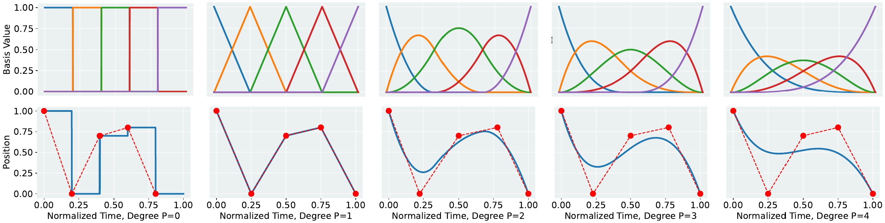
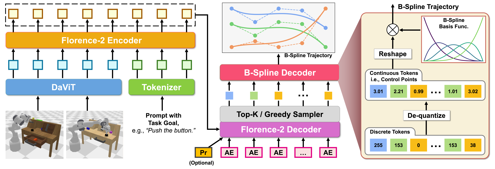

BEAST Tokenizer
Efficient Tokenization without Training

B-Splines as an Efficient Action Representation

BEAST-F: A tiny (0.77B) yet powerful VLA building upon BEAST Tokenizer

Getting Started
We provide a Hugging Face implementation for easy access. Simply install the dependencies and start using BEAST in just a few lines of code.
Installation
pip install torch numpy matplotlib einops transformers
Note: CUDA is recommended for optimal performance, but CPU is also supported by setting device="cpu".
Quick Start
from transformers import AutoProcessor
import torch
# Initialize the BEAST processor
beast = AutoProcessor.from_pretrained(
"zhouhongyi/beast",
trust_remote_code=True,
num_dof = 3,
num_basis = 20,
seq_len = 50,
degree_p = 3,
device = 'cpu'
)
# Create random trajectory data: 10 trajectories, 50 time steps, 3 dimensions
trajectories = torch.randn(10, 50, 3)
# Encode trajectories into discrete tokens
tokens = beast.encode_discrete(trajectories, update_bounds=True)
print(f"Encoded tokens shape: {tokens.shape}")
# Decode tokens back to continuous trajectories
reconstructed_trajectories = beast.decode_discrete(tokens)
print(f"Reconstructed trajectories shape: {reconstructed_trajectories.shape}")
# Calculate reconstruction quality
mse_loss = torch.mean((trajectories - reconstructed_trajectories) ** 2)
print(f"MSE Loss: {mse_loss.item()}")Calvin
LIBERO
Aloha_Sim
Insertion
Transfer
Franka Challenge
Fold
Mixer
Pour
Sweep
Franka Kitchen
Fold
Mixer
Pour
Real World Aloha
BibTeX
@inproceedings{
zhou2025beast,
title={{BEAST}: Efficient Tokenization of B-Splines Encoded Action Sequences for Imitation Learning},
author={Hongyi Zhou and Weiran Liao and Xi Huang and Yucheng Tang and Fabian Otto and Xiaogang Jia and Xinkai Jiang and Simon Hilber and Ge Li and Qian Wang and {\"O}mer Erdin{\c{c}} Ya{\u{g}}murlu and Nils Blank and Moritz Reuss and Rudolf Lioutikov},
booktitle={The Thirty-ninth Annual Conference on Neural Information Processing Systems},
year={2025},
url={https://openreview.net/forum?id=rQCl1sf62w}
}